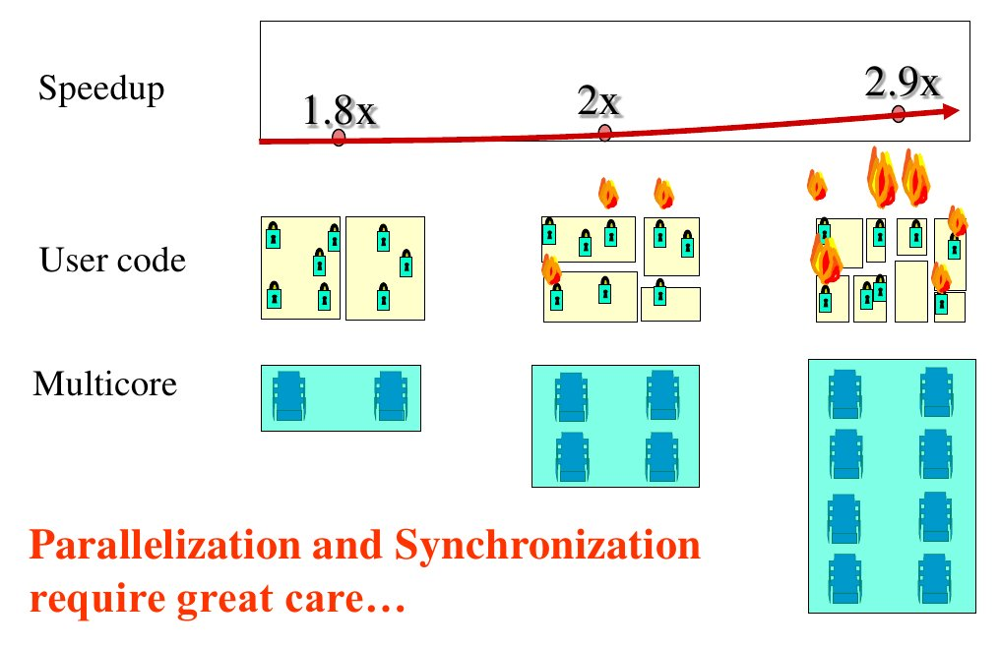

并行性能评估方法
然而随着核数的增加，软件的运行速度并没有相应成倍的增长
G.M.Amdahl在1967年提出了Amdahl’s law，针对并行处理的给出了一个模型，指出使用并行处理的提速由问题的可并行的部分所决定。

speedup=1/（串行部分比例+（1-串行部分比例）/核的数量）
S为问题中可被并行处理的部分的比例,n为并行处理器的数量，Speedup为并行后相比串行时的提速。例如：


按照Amdahl定律，，在10个CPU环境下即使我们把可并行处理部分提高到90％得到5倍左右的加速。如果核的数目为无限大，那么加速比的理论上限值为1/串行部分比例。
1988年sandia national lab的Gustafson等人，在用1024个处理器的超立方体结构上做实验时，发现加速比随着处理器的数量呈现行增长。
他们用计算加速比的定义简单推导：

speedup = (s+p*n)/(s+p) = s+p*n = n+(1-n)*s.
这就是著名的Gustafson公式，其中s为串行部分比例，n为核的数目。
这两个定律对于加速比的计算为什么会产生如此截然不同的结论呢？实际上，Amdahl定律有三个潜在前提：
1）最有算法的性能严格受限于CPU资源的可用性。
2）串行算法是给定问题的最优解决方案。
3）处理核增长的时候，问题的规模不变。
任何违背这三个假设的实例都可以打破Amdahl定律，也就是说，Amdahl定律对违背这三个假设的问题来说，是谬误的。Gustafson等人做的那三个实验属于大规模并行处理，违背了第三个假设。违背第一个假设和第二个假设的实例也很多。
比较这两个定律
Amdahl定律: 假设两个城市之间的距离是60km，一辆车花了一个小时走了头30km。无论在以后的30km里它开多快，都没有办法达到90km/h。因为你已经用了一个小时，而你的距离只有60km，所以最多也就是60km/h
Gustafson 定律：假设一辆车以低于90km/h的速度行驶，那只要给足够长的路它走，那平均下来有肯能达到90km/h或者更高
实际上，Amdahl定律和Gustafson定律是等价的，但等价的前提是，要重新计算公式中的s。在Amdahl定律中，认为s是独立于n 的变量，而实际上在大规模并行处理问题中，s是依赖于n的变量。在这里，假定Amdahl定律中的s为s1,而Gustafson 定律中的s为s2.那么s1与s2实际上可以很简单地推出如下关系：s1=1/(1+(1-s2)*p/s2).将这个式子带入Amdahl定律，就是Gustafson定律的公式了。Gustafson当时并没有意识到这点，他只是按照他的实验推导出了他的公式。
Amdahl定律的价值：
1. 无限的处理器核并不能带来性能上的无限增长，即应用程序从可并行部分所获得的性能提升最大值受限于串行部分所占的比例。
2. 对于加速程序性能而言，减少程序中串行部分所占的比例，增加并行部分比例的方法将比增加处理器核的数量的方法更有实际意义。
3. 只有当程序的大部分都是可并行代码的时候，增加处理器核的数量才会比增加并行代码的比例更加有效。
加速比性能定律p/logp <=s <=p
Amdahl定律:负载不变，减少时间
s=(f+(1-f))/(f+(1-f)/p) s--->1/f
Gustafson定律：时间不变，提高规模(精度)
S=f+p(1-f)=p+f(1-p)=p-f(p-1)
Sun和Ni定律:存储受限的加速定律
S=(f+(1-f)G(p))/(f+(1-f)G(p)/p) G(p)=1 :Amdahl;G(p)=p,Gustafson
可扩放性评测标准(目的)
确定某类问题用哪种并行算法与哪种并行体系结构结合，可以有效地利用大量处理器；
运行于某种体系结构的并行机上的某种算法，根据在小规模机器上的运行性能，预测在大规模机器上的性能
对固定的问题规模，确定最有的处理机数和加速比
指导改进算法、体系结构，以利用可扩充的大量处理器
可扩放性评测标准：
等效率度量标准:随着系统规模的增加，测量增加多少运算量会保持效率不变。E=s/p
等速度度量标准：系统规模增加时，若保持速度不变，每个处理器增加浮点操作的量V=Wp/pTp
等计算时间/通信开销比率度量标准：系统规模增加时，保持计/通比不变所需要增加的问题规模。
计算时间/通信开销比率：并行计算时间与系统开销之比。
//TODO